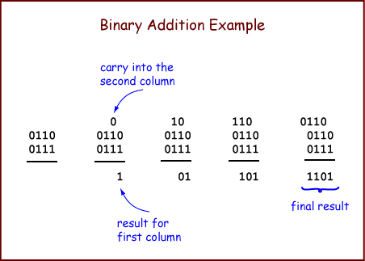

1 0 1 0 1 1 1 0 0 10 01 10
Adding up a column of bits is as easy as counting. It is also easy to do electronically. When you take a course in digital logic you will probably build a circuit to do it.
Now let us look at the full, n-bit, binary addition algorithm. The algorithm takes two operands and produces one result. An operand is the data that an algorithm operates on.
To add two N-bit (representations of) integers: Proceed from right-to-left, column-by-column, until you reach the leftmost column. For each column, perform 1-bit addition. Write the carry-out of each column above the column to its left. The bit is the left column's carry-in.
The example adds two 4-bit operands. The initial conditions are shown on the left.
First, add up the bits in the right-most column. There is no carry-in to this column, so all you need to do is count the bits. The result is 1 with a carry of 0. Write the 1 as the result for the column, and put the carry above the next column.
Continue right-to-left column by column until all the columns have been added. The carry-out of the left-most column does not go into the sum, but should be written to the left of the other carry bits.
With 4-bit arithmetic, the inputs are 4 bits and the output is 4 bits. With paper and pencil, the inputs and output be any size, but with electronics operations are performed with a fixed number of bits (usually). The left-most carry-bit does not go into the result. (But it is examined by the electronics to determine if overflow happened.)
Confirm that this addition is correct. (1) Check that the binary addition algorithm was done correctly, then (2) translate the binary operands into decimal and fill the corresponding blanks on the right and then (3) verify that the decimal sum represents the same integer as the binary sum.
Hopefully, the binary result in the bottom row will represent the same integer as the decimal result in the bottom row.